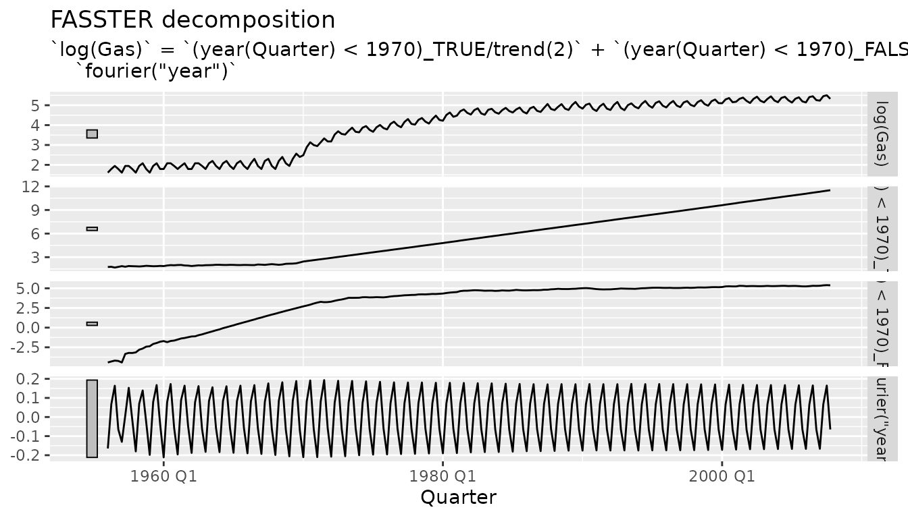

library(fasster)
#> Loading required package: fabletools
#> Registered S3 method overwritten by 'tsibble':
#> method from
#> as_tibble.grouped_df dplyrOverview
FASSTER (Forecasting with Additive Switching of Seasonality, Trend and Exogenous Regressors) is a state space model designed for forecasting time series with complex multiple seasonality patterns. The model addresses common limitations in existing approaches by providing:
- Flexibility: Modular specification of trend, seasonality, and ARMA components
- State switching: Different seasonal patterns for different categories (e.g., weekdays vs. weekends)
- Exogenous regressors: Natural support for external variables
- Speed: Efficient estimation using the Kalman filter
- Decomposition: Model-based decomposition reveals underlying patterns
When to use FASSTER
FASSTER is particularly useful for time series with:
- Multiple seasonal patterns that change based on categories or conditions
- Irregular switching between patterns (e.g., working days vs. holidays)
- High-frequency data where traditional methods are too slow
- Missing values that need to be handled gracefully
- External predictors that influence the time series
Common applications include:
- Pedestrian or traffic counts (weekday/weekend patterns)
- Energy demand (day/night or seasonal patterns)
- Retail sales (teaching periods, holidays)
- Web traffic (different patterns by day type)
Model specification
Basic formula syntax
FASSTER uses a formula-based interface similar to R’s
lm():
FASSTER(y ~ model_components)Model components
Trend terms
Use poly() to specify polynomial trends:
-
poly(1)- constant level -
poly(2)- linear trend -
poly(n)- polynomial of order n
Seasonal terms
Two types of seasonality are available:
-
season(period)- seasonal factors -
fourier(period, harmonics)- Fourier terms
For example: - season("year") - annual seasonal factors
- fourier("day") - daily seasonality with Fourier terms -
fourier("day", K = 6) - daily Fourier seasonality with 6
harmonics
State switching
The key innovation in FASSTER is the switching operator
%S%, which allows different model components for different
categories:
FASSTER(y ~ group %S% model_components)This creates separate states for each level of group.
For example:
# Different hourly patterns for weekdays vs. weekends
FASSTER(Count ~ day_type %S% fourier(24))Switching can be nested for more complex patterns:
# Different models for different day types and weather conditions
FASSTER(y ~ day_type %S% (trend(1) + weather %S% fourier(24)))Example: Gas production with structural break
Let’s demonstrate FASSTER using quarterly gas production data.
library(dplyr)
#>
#> Attaching package: 'dplyr'
#> The following objects are masked from 'package:stats':
#>
#> filter, lag
#> The following objects are masked from 'package:base':
#>
#> intersect, setdiff, setequal, union
library(lubridate)
#>
#> Attaching package: 'lubridate'
#> The following objects are masked from 'package:base':
#>
#> date, intersect, setdiff, union
# Use Australian gas production data
gas_data <- tsibbledata::aus_production |>
select(Quarter, Gas) |>
filter(!is.na(Gas))
# Split into training and test sets
train <- gas_data |> filter(year(Quarter) < 2008)
test <- gas_data |> filter(year(Quarter) >= 2008)Fitting a basic model
A simple model with switching trend to capture the structural break that occurred around 1970:
# Fit model with pre/post 1970 trends
fit <- train |>
model(
fasster = FASSTER(log(Gas) ~ (year(Quarter) < 1970) %S% trend(2) + fourier("year"))
)
fit
#> # A mable: 1 x 1
#> fasster
#> <model>
#> 1 <FASSTER>The model includes:
-
log(Gas)- a log transformation to regularise the data’s variation -
trend(2)- separate level and trend switched before and after 1970 -
fourier("year")- annual seasonal pattern with Fourier terms
Decomposition
FASSTER provides model-based decomposition of the time series components:
components(fit)
#> # A dable: 208 x 6 [1Q]
#> # Key: .model [1]
#> # : log(Gas) = `(year(Quarter) < 1970)_TRUE/trend(2)` + `(year(Quarter)
#> # < 1970)_FALSE/trend(2)` + `fourier("year")`
#> .model Quarter `log(Gas)` (year(Quarter) < 1970)_TR…¹ (year(Quarter) < 197…²
#> <chr> <qtr> <dbl> <dbl> <dbl>
#> 1 fasster 1956 Q1 1.61 1.75 -4.43
#> 2 fasster 1956 Q2 1.79 1.78 -4.31
#> 3 fasster 1956 Q3 1.95 1.68 -4.19
#> 4 fasster 1956 Q4 1.79 1.77 -4.24
#> 5 fasster 1957 Q1 1.61 1.86 -4.43
#> 6 fasster 1957 Q2 1.95 1.79 -3.34
#> 7 fasster 1957 Q3 1.95 1.88 -3.22
#> 8 fasster 1957 Q4 1.79 1.85 -3.23
#> 9 fasster 1958 Q1 1.61 1.84 -3.15
#> 10 fasster 1958 Q2 1.95 1.82 -2.81
#> # ℹ 198 more rows
#> # ℹ abbreviated names: ¹`(year(Quarter) < 1970)_TRUE/trend(2)`,
#> # ²`(year(Quarter) < 1970)_FALSE/trend(2)`
#> # ℹ 1 more variable: `fourier("year")` <dbl>
# Plot decomposition
components(fit) |>
autoplot()
The decomposition reveals: - Original data and fitted values - Level components (separate for pre/post 1970) - Seasonal components
Notice how the pre-1970 level remains flat after 1970, while the post-1970 level takes over, highlighting the structural break.
Handling missing values
FASSTER handles missing values naturally during estimation. The Kalman filter simply skips updating states when data is missing:
# Model works even with missing values
data_with_na <- gas_data |>
# Insert some missing values randomly
mutate(Gas = if_else(row_number() %in% sample(n(), 10), NA_real_, Gas))
fit_na <- data_with_na |>
model(FASSTER(Gas ~ (year(Quarter) < 1970) %S% trend(2) + fourier("year", K = 2)))
# Interpolate missing values
fit_na |>
interpolate(data_with_na)
#> # A tsibble: 218 x 2 [1Q]
#> Quarter Gas
#> <qtr> <dbl>
#> 1 1956 Q1 5
#> 2 1956 Q2 6
#> 3 1956 Q3 23.6
#> 4 1956 Q4 6
#> 5 1957 Q1 5
#> 6 1957 Q2 7
#> 7 1957 Q3 22.1
#> 8 1957 Q4 6
#> 9 1958 Q1 5
#> 10 1958 Q2 7
#> # ℹ 208 more rowsAdvanced features
Multiple switching levels
Create complex models with nested switching:
# Different patterns for working days and rainy days
FASSTER(y ~ workday %S% (trend(1) + rain %S% fourier("day")))Parameter estimation
FASSTER uses a heuristic approach for fast parameter estimation:
- Filter data with default parameters
- Smooth states to approximate desired behavior
- Extract variances from smoothed states
- Use estimated parameters for final model
This “filterSmooth” approach: - Requires only two passes through the data - Works well with non-saturating Fourier terms - Provides reasonable estimates without maximum likelihood
For very long series, estimation can be sped up by using only recent data:
# Use only last 1000 observations for parameter estimation
FASSTER(y ~ model, include = 1000)Summary
FASSTER provides a flexible framework for modeling complex time series with:
- Modular component specification
- State switching for irregular multiple seasonality
- Fast estimation via Kalman filtering
- Natural handling of missing values
- Model-based decomposition
The concise formula interface makes it easy to specify models suitable for high-frequency data with complex seasonal patterns.